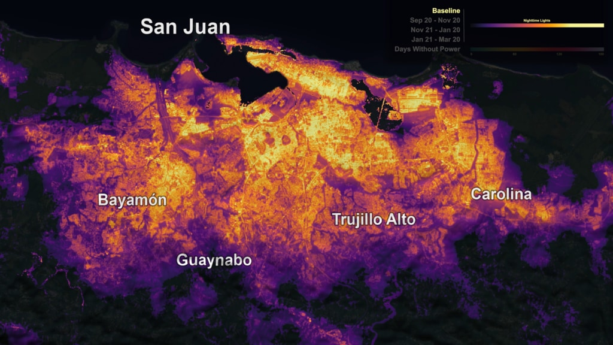

01
Black Marble, actividad humana y resiliencia territorial
La ciudad después del anochecer
Las luces nocturnas observadas desde el espacio permiten analizar otra dimensión de las ciudades: cambios en patrones de actividad, electrificación, crecimiento urbano, interrupciones de energía y recuperación después de desastres.
NASA Black Marble, basado en observaciones VIIRS Day/Night Band, ofrece una serie global de productos de luces nocturnas (radiancia) que puede utilizarse como una capa de inteligencia territorial para estudiar cómo cambia la presencia humana sobre el territorio.
Aplicaciones a destacar
- Cambios en actividad y expansión urbana
- Continuidad o interrupción de infraestructura eléctrica
- Respuesta y recuperación ante eventos extremos
- Desigualdades territoriales visibles en acceso y actividad nocturna
- Iluminación artificial como variable ambiental
- Combinación con capas de clima, población, infraestructura y exposición
Black Marble fue utilizado para observar la pérdida y recuperación de electricidad en Puerto Rico después del huracán María: un dato satelital que pasa de ser una imagen del planeta de noche a una herramienta para comprender vulnerabilidad, infraestructura y recuperación comunitaria.
Precisión técnica: Black Marble no mide salud. Mide radiancia nocturna y puede usarse como indicador o variable territorial dentro de análisis más amplios. Black Marble HD (30 m) es un producto modelado orientado a visualización; para análisis cuantitativo se usan los productos científicos VNP46.